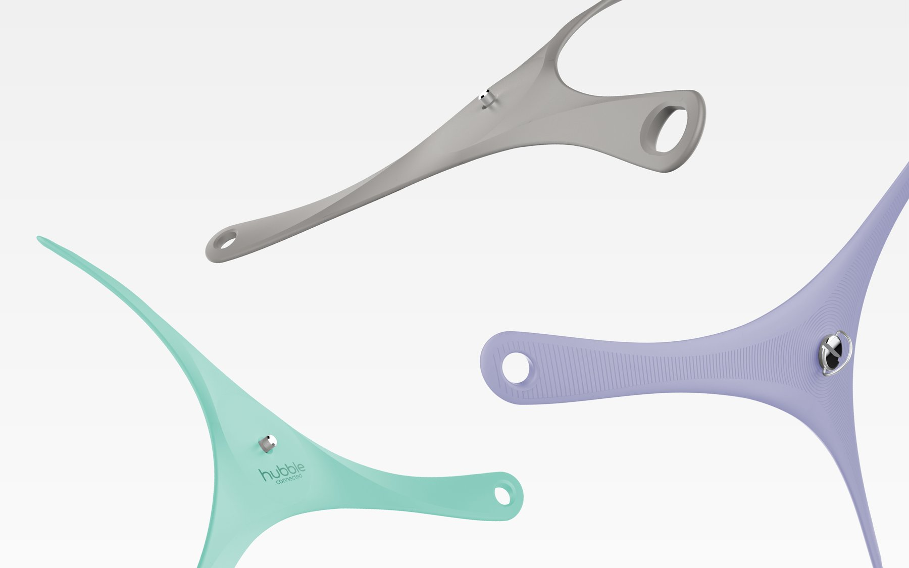
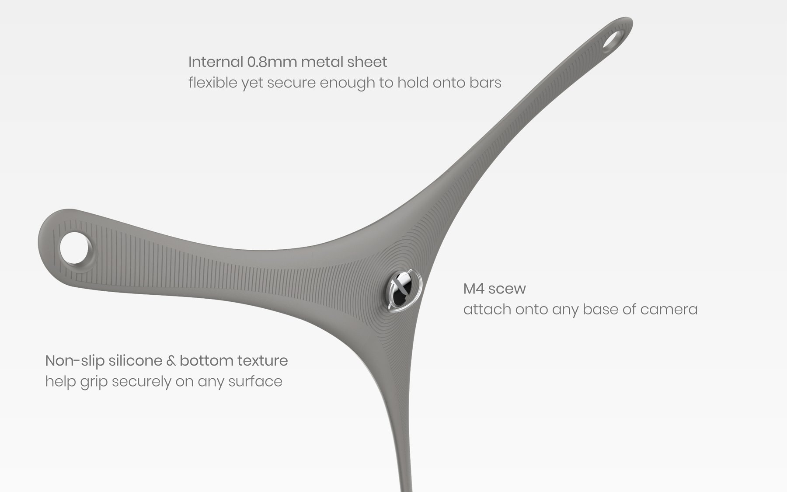
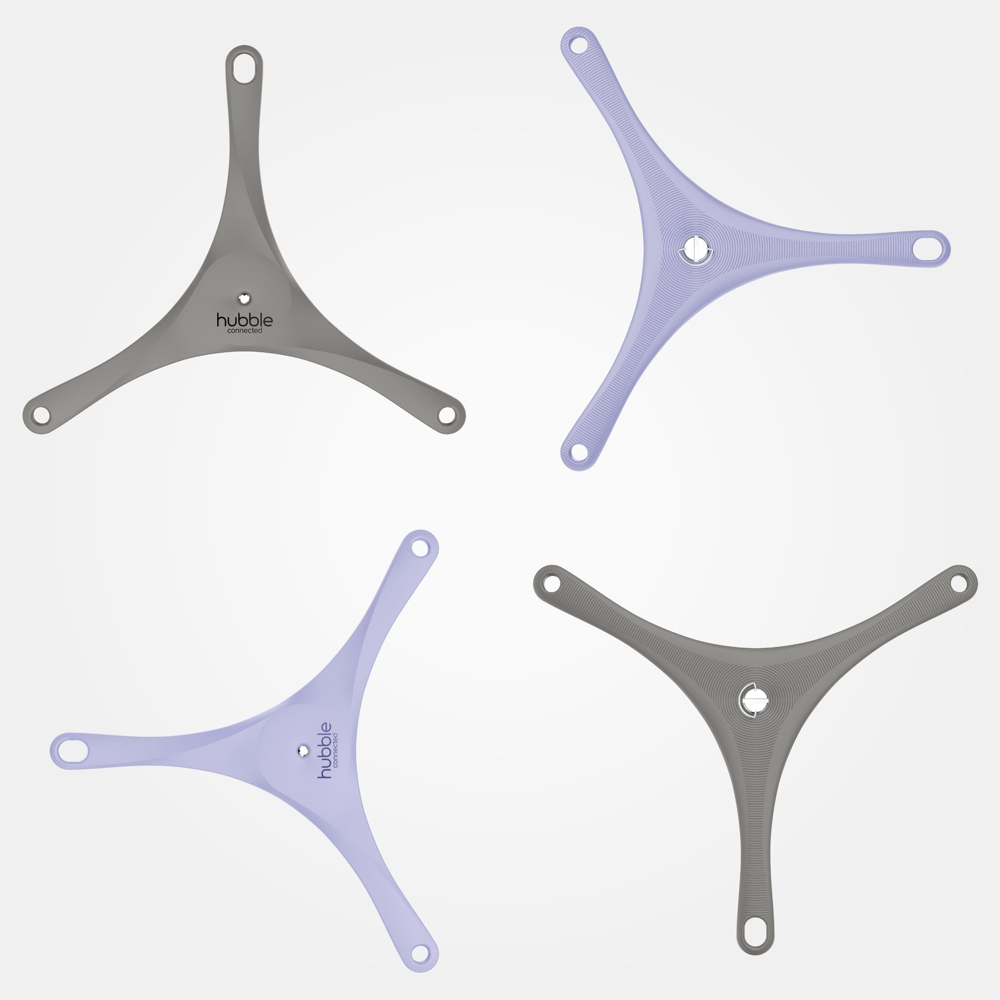

HUBBLE
STAR GRIP


A universal baby camera mount that offers multiple mounting methods.
Screwable onto any baby monitor for a wider viewing angle.

Stand
Bendable to raise the baby camera to increase its height.

Crib Mount
Bendable around crib furniture to provide a wider view.

Wall Mount
Install with screws on walls for overhead views.

